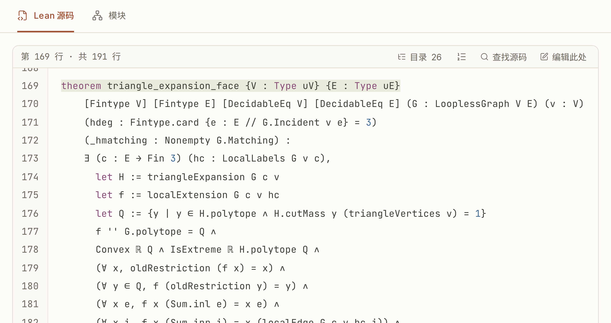
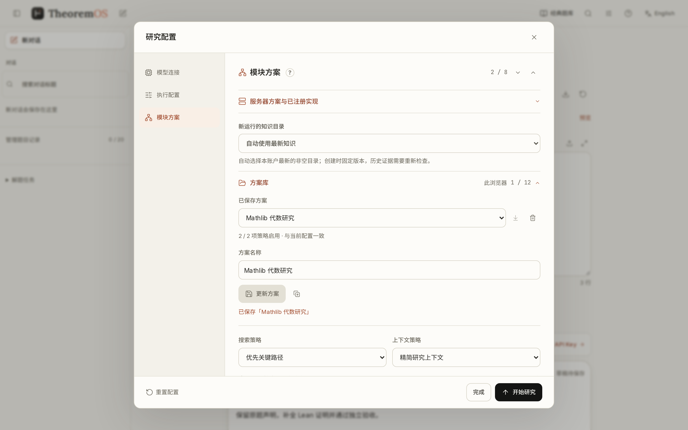

数学研究工作台 · 白名单内测
从数学问题 到 Lean 证明
用自然语言或 TeX 提出问题，核对 Lean 陈述，跟进证明，保留源码与验收记录。
- 浏览器中即开即用，无需在本机安装 Lean 或 Docker。
- 内测期间平台费用 ¥0，自备模型 API Key（由模型服务商计费）。
- 核对与验收分离：题意对齐由研究者确认，完整证明由独立 Lean 内核验收。

01 / 研究工作台
在工作台推进一道题
原题、形式化陈述、证明尝试与验收结果，保存在同一份研究记录中。
-
01
给出假设与目标
输入自然语言、TeX，或带入未完成的 Lean 草稿。
-
02
核对陈述与计划
确认要证明什么，设置时间和 Token 预算，再开始尝试。
-
03
跟进证明与验收
查看候选和诊断，下载源码与报告，或继续未完成的研究。
Lean 源码与诊断
原题与草稿 · 固定环境 · 编译反馈
展开查看
-
原题与草稿
展开题目陈述与证明源码。
-
固定证明环境
使用 Lean 标准库或固定的 Mathlib（含 Lean 4.33.0、Mathlib 与 53 个自有库模块）。
-
查看 Lean 诊断
对照反馈，逐步检查每一次修改。

02 / 陈述核对
先核对陈述，再进入证明
Lean 检查形式化后的命题。假设与目标是否表达原意，由你确认。
选择你的研究起点
网页适合条件明确、结论清楚的单文件数学任务。
-
从数学命题开始
用自然语言或 TeX 写出对象、假设与结论，再核对形式化陈述。
准备命题草稿 ↗ -
继续 Lean 草稿
保留 import、定理声明和未完成证明，在固定 Mathlib 环境继续。
打开 Lean 模板 ↗
自定义依赖与多文件工程
自定义依赖、多文件 Lake 工程或指定工具链，可先讨论研究合作。查看当前能力范围 ↗
登录后会带入所选模板与环境，准备草稿不调用模型。
试着核对这两个目标
本地演练 · 不发起研究确认后查看证明回放；也可以修改原题和目标，再重新核对。
TriangleFace · 目标摘要。核对操作在浏览器本地演练，不调用工作台。
给定有完美匹配的有限无自环图，将度三顶点展开成三角形。证明原匹配多面体与展开图中切质量为 1 的面线性对应，并保持最小面。
-
collapse_reattach展开后的顶点折叠回原顶点。 -
triangle_expansion_face构造线性面对应，并运输每一点的最小面。
两个目标尚未确认。在真实工作台中，确认陈述前不会进入证明阶段。
03 / 证明回放
三角展开，如何保持面的对应？
从图上的局部变换，到匹配多面体的线性对应。沿四个真实检查节点，查看构造、最小面运输与完整原题验收。
构造展开
把度三顶点替换成三角形。先证明展开后的顶点能折叠回原顶点。
theorem collapse_reattach (v : V) (i : Fin 3) (w : V) :
triangleCollapse v (reattach v i w) = w := by
by_cases h : w = v
· subst w
fin_cases i <;> simp [reattach,triangleTip,triangleCollapse]
· simp [reattach,h,triangleCollapse]
def triangleExpansion (G : LooplessGraph V E) (c : E → Fin 3) (v : V) :
LooplessGraph (V ⊕ Fin 2) (E ⊕ Fin 3) where
left := Sum.elim (fun e => reattach v (c e) (G.left e)) (fun i => triangleTip v (i + 1))
right := Sum.elim (fun e => reattach v (c e) (G.right e)) (fun i => triangleTip v (i + 2))
loopless := by
intro e h
rcases e with e | i
· have hh := congrArg (triangleCollapse v) h
exact G.loopless e ((collapse_reattach v (c e) (G.left e)).symm.trans
(hh.trans (collapse_reattach v (c e) (G.right e))))
· fin_cases i <;> simp [triangleTip] at h刻画切面
把三角形边界上的切质量写成原图边坐标之和，定位要证明的面。
theorem cutMass_triangleVertices (G : LooplessGraph V E) (c : E → Fin 3) (v : V)
(y : E ⊕ Fin 3 → ℝ) :
MatchingEntropyBounds.LooplessGraph.cutMass (triangleExpansion G c v) y (triangleVertices v) =
∑ e : E, if G.Incident v e then y (Sum.inl e) else 0 := by
classical
rw [MatchingEntropyBounds.LooplessGraph.cutMass, MatchingEntropyBounds.LooplessGraph.cut, Finset.sum_filter, Fintype.sum_sum_type]
have hnew : (∑ i : Fin 3,
(if MatchingEntropyBounds.LooplessGraph.Crosses (triangleExpansion G c v) (triangleVertices v) (Sum.inr i)
then y (Sum.inr i) else 0)) = 0 := by
apply Finset.sum_eq_zero
intro i _
simp [not_crosses_inr G c v i]
rw [hnew, add_zero]
apply Finset.sum_congr rfl
intro e _
by_cases h : G.Incident v e <;> simp [crosses_inl_iff, h]运输最小面
证明带有线性逆映射的面对应，会把每一点的最小面一同运输。
theorem minFace_linear_image {A B : Type*} [AddCommGroup A] [Module ℝ A]
[AddCommGroup B] [Module ℝ B] (P : Set A) (R : Set B) (f : A →ₗ[ℝ] B)
(g : B →ₗ[ℝ] A) (hP : Convex ℝ P) (hR : Convex ℝ R)
(hQext : IsExtreme ℝ R (f '' P)) (hgf : ∀ x, g (f x) = x)
(hfg : ∀ y, y ∈ f '' P → f (g y) = y) :
∀ x, x ∈ P → CanonicalFace198.minFace R (f x) = f '' CanonicalFace198.minFace P x := by
intro x hx
classical
set Q : Set B := f '' P with hQdef
have hQext' : IsExtreme ℝ R Q := hQext
have hfinj : Function.Injective f := by
intro a b hab
calc a = g (f a) := (hgf a).symm
_ = g (f b) := by rw [hab]
_ = b := hgf b完整原题验收
合并面对应、互逆映射与最小面运输，完成原题的全部结论。
theorem triangle_expansion_face {V : Type uV} {E : Type uE}
[Fintype V] [Fintype E] [DecidableEq V] [DecidableEq E] (G : LooplessGraph V E) (v : V)
(hdeg : Fintype.card {e : E // G.Incident v e} = 3)
(_hmatching : Nonempty G.Matching) :
∃ (c : E → Fin 3) (hc : LocalLabels G v c),
let H := triangleExpansion G c v
let f := localExtension G c v hc
let Q := {y | y ∈ H.polytope ∧ H.cutMass y (triangleVertices v) = 1}
f '' G.polytope = Q ∧
Convex ℝ Q ∧ IsExtreme ℝ H.polytope Q ∧
(∀ x, oldRestriction (f x) = x) ∧
(∀ y ∈ Q, f (oldRestriction y) = y) ∧
(∀ x e, f x (Sum.inl e) = x e) ∧
(∀ x i, f x (Sum.inr i) = x (localEdge G c v hc i)) ∧
(∀ x, (∀ e, x e = (1/3 : ℝ)) → ∀ e, f x e = (1/3 : ℝ)) ∧
(∀ x ∈ G.polytope, CanonicalFace198.minFace H.polytope (f x) = f '' CanonicalFace198.minFace G.polytope x) := by
classical
obtain ⟨c, hc⟩ := existsLocalLabels G v hdeg
refine ⟨c, hc, ?_⟩
dsimp only
have hfg : ∀ y ∈ {y | y ∈ (triangleExpansion G c v).polytope ∧
MatchingEntropyBounds.LooplessGraph.cutMass (triangleExpansion G c v) y (triangleVertices v) = 1},
localExtension G c v hc (oldRestriction y) = y := by
intro y hy
have hy' : y ∈ localExtension G c v hc '' G.polytope := by
rw [← cut_one_image_eq G c v hc]
exact ⟨hy.1, by rw [cutLinear_apply]; exact hy.2⟩
obtain ⟨x, -, rfl⟩ := hy'
rfl
have hgf : ∀ x, oldRestriction (localExtension G c v hc x) = x := by
intro x
rfl
refine ⟨?_, convex_polytope_cut_eq_one G c v, isExtreme_polytope_cut_eq_one G c v,
hgf, hfg, ?_, ?_, ?_, ?_⟩
· rw [← cut_one_image_eq G c v hc]
rfl
· intro x e
rfl
· intro x i
rfl
· intro x hx e
cases e <;> simp [localExtension, hx]
· exact minFace_transport_consumer G c v hc (by rw [← cut_one_image_eq G c v hc]; rfl)
(isExtreme_polytope_cut_eq_one G c v) hgf hfg04 / 成果与证据
每份成果，都能核对依据
官方通过与本地验收分别记录，原始研究归属随源码与证据保留。
Submission.leanby
exact Helpers.rpow_from_nat_power (NumberField.house α) _
(NumberField.house_nonneg α) (Helpers.argument_card_pos α)
(Helpers.house_power_lower_bound α α_int α_ne_zero α_not_rootOfUnity)
怎样判断一份成果的范围？
官方通过 · 本地验收通过 · 研究中
展开说明
查看全部官方验收记录（10 项 Lean-Eval 官方通过）
保留前身 DeepScientist / DeepScientist Math 历史成果的原始归属、源码与验收记录
收起 / 展开
| 题目与领域 | 原始研究归属 | 验收与源码 |
|---|---|---|
| Sunflower lemma 向日葵引理的改进界 · 组合数学 | DeepScientist Math + GPT-6.1 (gpt-6.1-sol) |
Lean 源码 ↗ 官方通过 ↗ |
| Lorentzian polynomials Lorentzian 多项式 · 代数组合 | DeepScientist Math + GPT-6.1 (gpt-6.1-sol) |
Lean 源码 ↗ 官方通过 ↗ |
| Optimal paper Möbius band 纸带 Möbius 环的长宽比下界 · 几何 | DeepScientist Math + GPT-6.1 (gpt-6.1-sol) |
Lean 源码 ↗ 官方通过 ↗ |
| Algebraic integers 代数整数：λ_SSS 的上界 · 代数数论 | DeepScientist Math + GPT-6.1 (gpt-6.1-sol) |
Lean 源码 ↗ 官方通过 ↗ |
| Dimitrov 代数整数的 house 下界 · 数论 | DeepScientist Math + GPT-6.1 (gpt-6.1-sol) |
Lean 源码 ↗ 官方通过 ↗ |
| Hopf–Rinow 测地完备与度量完备 · 微分几何 | DeepScientist Math + GPT-6.1 (gpt-6.1-sol) |
Lean 源码 ↗ 官方通过 ↗ |
| Fractional expectation thresholds 分数期望阈值 · 概率组合 | DeepScientist Math + GPT-6.1 (gpt-6.1-sol) |
Lean 源码 ↗ 官方通过 ↗ |
| Equiangular lines 固定夹角等角线 · 离散几何 | DeepScientist Math + GPT-6.1 (gpt-6.1-sol) |
Lean 源码 ↗ 官方通过 ↗ |
| Rademacher & Enflo type Rademacher 型与 Enflo 型的一致性 · 泛函分析 | DeepScientist Math + GPT-6.1 (gpt-6.1-sol) |
Lean 源码 ↗ 官方通过 ↗ |
| Unit conjecture 群环单位猜想 · 代数 | DeepScientist + GPT-5.6 |
Lean 源码 ↗ 官方通过 ↗ |
05 / 研究专题
沿着不同数学问题读证明
从算子构造、几何覆盖到算法反例。展开一道真实题目，对照关键步骤与已检查的源码。
概率与谱论
随机势下的算子谱
ℤ² 上，h > 0，势在 [−h,h] 内独立均匀分布：谱几乎必然为 [−4−h,4+h]。
查看推导与源码
theorem anderson_spectrum_ae {h : ℝ} (hh : 0 < h) :
∀ᵐ v ∂disorderLaw h, ∃ H : Hilbert →L[ℂ] Hilbert,
IsAndersonOperator v H ∧ IsSelfAdjoint H ∧ spectrum ℂ H = spectralInterval h := by
exact anderson_spectrum_ae_sorry_free hh
离散几何
欧氏平面的七色着色
构造七色着色，使距离恰为 1 的任意两点颜色不同。
查看推导与源码
theorem properColoring_seven : ProperColoring 7 :=
⟨triColor, proper_coloring⟩
热带优化
终止程序中的非最优输出
两步均具有唯一选择并正常终止，所得可行解成本为 1，另有成本为 0 的可行点。
查看推导与源码
theorem finite_execution_not_optimal :
crossRowRestriction initial ∧
ForcedSingletonStep initial middle 0 1 ∧
ForcedSingletonStep middle finalState 1 0 ∧
(¬ ∃ j, finalState.remaining j) ∧ stop finalState ∧
feasible initial output ∧ feasible initial better ∧
output 2 = 0 ∧ better 2 = 0 ∧
(output 1 : Coeff) = eval (lowerForm initial 0 1) output ∧
(output 0 : Coeff) = eval (lowerForm middle 1 0) output ∧
eval initial.cost output = eval finalState.cost output ∧
eval initial.cost better < eval finalState.cost output := by以上三例通过本项目的 Lean 与原题比较器检查，尚未确认 OpenAI 官方评测结果。原始研究归属与历史续跑记录保存在各自档案中。
06 / 深度研究
为复杂证明组织研究
拆解引理、调用已有知识，在固定环境中验证。让多轮尝试留下可继续、可复核的研究成果。
-
01
按引理分工协作
把主问题拆成有依赖关系的任务，分别探索、证明和审阅，再合并回完整原题。
-
02
在固定环境里推导
用确定版本的 Lean 与 Mathlib 检查候选，从库中检索定义和已有定理。
-
03
把研究接着做下去
任务、笔记、源码与检查记录随运行保存；恢复时沿用原题和已完成的工作。
-
04
每个结论都能追溯
从结论回到代码、检查回执与原题。导出源码和环境，在本地复核。
从引理到主定理
四个已检查任务的节选。折叠恒等式用于切质量分解；切质量分解与局部标号共同用于主定理。点击任务查看该轮记录。
-
结构引理
折叠恒等式
collapse_reattach已检查 ↓ -
构造引理
局部标号
existsLocalLabels已检查 ↓ -
定量引理
切质量分解
cutMass_triangleVertices已检查 → -
主定理
建立面的对应
triangle_expansion_face已检查
局部引理通过后，仍需检查集成源码和原题的全部目标。
07 / 引理与知识
让已验证引理参与下一次证明
按当前目标检索已有知识，读清类型与前提，再检查它在新证明中的实际引用。
-
从当前目标检索
在本账户的已验证引理目录中查找相关结果，保留完整声明与来源。
-
核对每个前提
查看类型签名、证明源码和依赖环境，确认引理适用于当前数学对象。
-
在新证明中重检
新研究固定所选目录的快照；引理进入证明环境后仍需编译，整题另做独立验收。
最小面沿线性映射运输
在凸性与极面条件下，先证明一般的最小面对应，再用于图的三角展开。
theorem minFace_linear_image {A B : Type*} [AddCommGroup A] [Module ℝ A]
[AddCommGroup B] [Module ℝ B] (P : Set A) (R : Set B) (f : A →ₗ[ℝ] B)
(g : B →ₗ[ℝ] A) (hP : Convex ℝ P) (hR : Convex ℝ R)
(hQext : IsExtreme ℝ R (f '' P)) (hgf : ∀ x, g (f x) = x)
(hfg : ∀ y, y ∈ f '' P → f (g y) = y) :
∀ x, x ∈ P → CanonicalFace198.minFace R (f x) = f '' CanonicalFace198.minFace P x := by检索到的引理，能直接套用吗？
先核对假设，再检查实际调用。检索命中本身不算证明通过；不兼容的 Lean 环境也不能直接沿用。这里展示的是已验收源码中的通用引理。
08 / 协作与交付
与同行围绕同一题协作
核对题意、审阅计划，让讨论对应具体任务。分享成果时，把原题、证明与验收依据一起交给同行。
-
审阅题意与初始计划
选择共同推进，确认陈述、审阅计划后再展开证明；研究中可以补充指导与调整方案。
-
对着具体任务讨论
意见对应任务和版本，分别查看指导是否送达、是否采纳，以及后续修改和检查。
-
决定成员能做什么
邀请同伴参与项目，分别设置可见范围与运行操作权限；成员授权和分享入口均可撤销。
proof-kits/dimitrov
让同行在本地重新检查
下载公开材料，在固定环境里核对证明，无需 TheoremOS 账号或模型 API Key。
- 原题与证明
Challenge.lean·Submission.lean- 工具链与依赖
lean-toolchain·lake-manifest.json- 校验与复核
SHA256SUMS·verify.py
下载后，怎样开始复核？
在包目录下先核对文件，再准备固定依赖并运行 Lean 检查。需安装 Python 3、Git 与 Lean 工具链管理器 Elan。
python3 verify.py --check-files
python3 verify.py --prepare --lean-only完整题面对照还需按包内说明配置上游比较器，再运行 python3 verify.py。
分享链接会公开哪些内容？
分享选定成果的原题、证明、结果与环境信息；如有题意核对记录，一并展示。API Key、邮箱和 Agent 对话不包含在内。撤销后链接不再可访问，已下载的副本仍由接收者保留。查看隐私与条款 ↗
09 / 研究组件
试验你的证明方法
固定题目、环境、模型与预算，比较不同策略和协作方式的结果。
五个研究组件
选择下一步任务
M3 · 搜索接口选择就绪任务，决定继续、重试或停止，结合路线与共享预算安排尝试。
- 输入
- 研究状态 · 候选操作 · 共享预算
- 输出
- 下一步操作 · 有序就绪任务
S3 始终独立验收完整原题。
模块图谱与方案库
M5 组织协作；研究循环依次经过 M3 搜索、M4 上下文、M1 构造与 M2 检查，再将反馈交回 M3。集成后的证明交给 S3，对完整原题独立验收。
集成后的证明须在固定环境中通过 Lean 对完整原题的检查。局部检查与模型的完成消息均不构成最终验收。
M3 → M4 · 根据就绪任务，整理下一步所需的上下文。

10 / 申请内测与常见问题
带一道题来试试
工作台目前为白名单内测。介绍你的研究用途，公开题目或 Lean 链接选填。
内测期间平台免费。模型调用使用你的 API Key，由模型服务商计费。
GitHub 申请公开，请勿填写 Key 或个人联系方式。
- 01 / 提交申请 在 GitHub 或邮件中说明研究用途。
- 02 / 私下确认邮箱 收到回复后，确认用于登录的邮箱。
- 03 / 登录工作台 加入白名单后，用邮箱验证码登录并连接模型。
已有资格？打开工作台 ↗
使用前的几个问题
需要自己配置 Lean 吗？
不用。工作台在浏览器中运行，提供 Lean 标准库或固定的 Mathlib 环境，无需在本机安装 Lean 或 Docker。
Lean 通过后，还要核对什么？
Lean 验收的是形式化陈述的证明。你仍需核对陈述是否准确表达原题的假设与目标；含义审核与证明验收分别展示。
支持哪些 Key，如何保存？
支持 OpenAI 和已配置网关。Key 由对应服务商或网关管理员提供，可临时使用，也可加密保存到账号，随时删除。「检查 Key 与模型」只读取模型列表，不调用模型。
如何设置预算？
默认形式化预算为 10 分钟 / 40 万 Token，证明预算为 5 分钟 / 20 万 Token，开始前可以调整。按已报告用量停止，在途请求可能超额；Token 上限不是费用封顶。
研究记录会保存吗？
运行记录归属账号，可下载源码和报告。删除账号会立即清除在线内容；维护备份与用量标识的保留方式见 隐私与条款。
已有证明思路，怎样带入？
在原题后补充已知引理、关键构造和希望尝试的路线；已有 Lean 时可保留声明与未完成证明，从草稿继续。开始前仍需核对题意与所用环境。
研究未完成，还能继续吗？
保留源码、笔记和检查记录。在运行详情选择“从这一版继续”，以保存的源码新建研究，沿用冻结原题并重新检查；已有局部结果不等于整题完成。